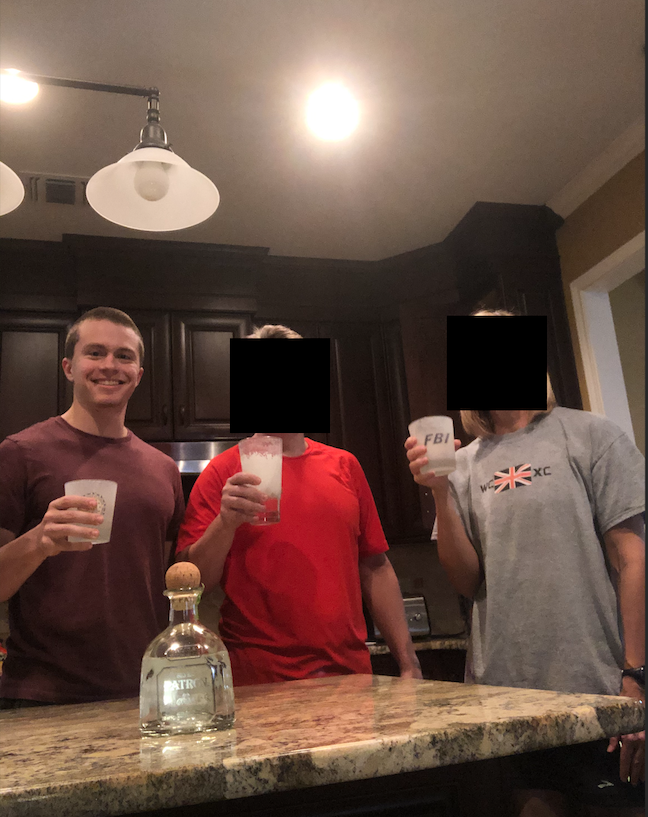
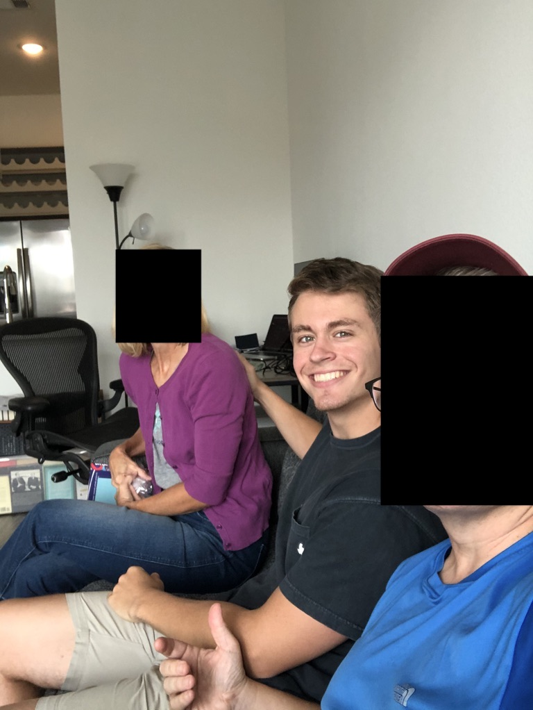

Reflections one year after my father's death.
I am now much more sensitive to how "delicate" life is, and not just in regards to life. My father died with no forewarning sans high cholesterol. Nothing showed up on his annual stress tests. He never complained of chest pains or had any other types of symptoms. But one day he died, just like that, ending his world and changing his family's.
General life draws a parallel to this: sometimes we are made aware of massive life changes, other times it comes unexpectedly. Working hard in a job culminates in an expected promotion; a downturn in the industry culminates in an unexpected layoff, even when everything and more was done right. Regular sex at the right time (hopefully) culminates in a joyous pregnancy and healthy baby; bad luck culminates in a miscarriage, even when everything and more was done right. Effective communication and consistent affection culminates in a fulfilling relationship; a partner that just wants something different culminates in a harsh breakup, even when everything and more was done right.
Multiple times in the past year I've answered phone calls half expecting to hear horrible news in the same fashion I did when our family friend called me about my father. This isn't necessarily unhealthy (it's definitely not healthy), but rather an immediate reaction caused by my increased sensitivity.
Luck—good and bad—guarantees there's no guarantee of anything. Anything can happen to anyone at anytime. Luck is blind to whom it chooses as its victims that day. Life should be lived accordingly.
"What would Dad do?" is a question I regularly ask myself to gauge how I should act. My father had a fairly accurate moral compass and did a good job instilling similar values in me and my brother, but like most people, I can stray from the righteous path and need to correct course. In comes the golden WWDD question.
WWDD also helps in viewing situations from another perspective. I transport myself to his view and judge my behavior. Sometimes I turn out to be the bad guy and need some get-right, others my initial decision is the right one and I choose to live with it.
Maybe WWDD is a way of carrying on his legacy when he's gone or having some semblance of his presence in my life. Probably a mix of both.
Pictures, videos, audio, and writing are the only ways to truly preserve memories. Without any of those taken in the moment or soon after, memories will fade and distort themselves (often for the better, which isn't a terrible thing). Documenting life through these mediums is, in my opinion, one of the best decisions that can be made for future selves. I have taken well over 1,000 pictures of the last year, compared to a mere 100 or so (both very rough estimates). I frequently look back on pictures and videos from the past and reminisce on the good memories associated with them.
I wish I had taken more pictures with my father. There were plenty of opportunities, believe me. I could've taken one on our bike rides, on the way to and from the Longhorn that June evening, while sitting on the couch. The list is endless and more instances will continue to come to mind over the years. The best I can do is take this knowledge and a) apply it in the future, and b) encourage others to follow it. God, how I wished someone had told me to take more pictures. Would I have listened to them? Who knows.
Nostalgic triggers now evoke a much greater, more intense response than before. I am almost instantly transported back into time to relive that moment.
Some of my fondest childhood memories involve mountain biking in the greenbelt behind our home with my Dad, of which two occasions stand out. First, the time in 2009 in which I wore a balaclava. It was my dad, my brother, and I riding north in the frigid cold and wind. I felt like an absolute badass with the clava on. We raced around the trails, my brother crashed and slid on a patch of ice, we explored the untamed sections that had been unridden for years. The untamed has since been domesticated and become mainstream, forever sealing that memory in the vault and ensuring nothing similar can be made.
Second, the time in 2011 in which it was golden hour and we were riding with JW on the trails around the windy trails. Golden, unadulterated sunlight shone through at a perfect angle without a cloud in the sky, bathing the trees, forest floor, and ourselves and bikes. The weather was cool and breezy, and the fact that it was Saturday eased my mind from the dread of school on Monday. It was just us, riding the trails without a care in the world.
Both memories have been triggered multiple times since: the first due to the weather, the second due to the sunlight and location. Sadness overwhelmed me at the thought that I could never replicate that again, and the chances to do so—all of which had been presented to me in the form of "Ethan, want to go ride?"—had long past. Other triggers activate regularly, and each time I beat myself up for not having taken the opportunity to a) make more memories, or b) replicate the best ones. (Replication of feeling shouldn't be strived for, as it leads to disappointment. Good memories are often hyped up as time fades. Instead, focus on the experience itself and enjoying that. And only attempt replication when in a good mood—the last instance of that memory will be the one that sticks.)
I saw a CBT-trained therapist for about six months after his death, both for that and other personal reasons. I did not find that she helped for grief. It's not a personal attack nor insult to her skills or practice, I just don't think it was the best way for me to deal with it.